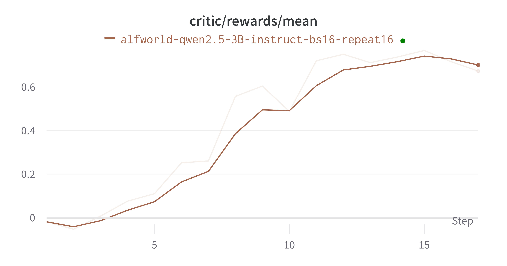
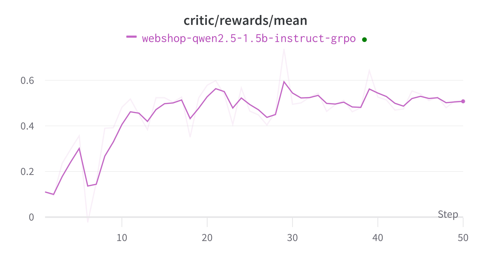

Concatenated Multi-Turn RFT#
In Trinity-RFT, we support Agentic RL with multiple rounds of interaction with environments.
Trinity’s decoupled design allows you to easily define custom interaction methods between environments and agents through Workflow configuration, to collect corresponding experiences for RL training.
Below, we will first provide two multi-round environment Workflows - ALFworld and WebShop - as examples of multi-round interaction.
Here is how to run these two examples step by step.
Step 1: Environments & Data preparation#
Environment Preparation#
To run the ALFworld and WebShop env, you need to setup the corresponding environments.
ALFworld is a text-based interactive environment that simulates household scenarios. Agents need to understand natural language instructions and complete various domestic tasks like finding objects, moving items, and operating devices in a virtual home environment.
WebShop is a simulated online shopping environment where AI agents learn to shop based on user requirements. The platform allows agents to browse products, compare options, and make purchase decisions, mimicking real-world e-commerce interactions.
Guidelines for preparing ALFWorld environment
Pip install:
pip install alfworld[full]Export the path:
export ALFWORLD_DATA=/path/to/alfworld/dataDownload the environment:
alfworld-download
Now you can find the environment in $ALFWORLD_DATA and continue with the following steps.
Guidelines for preparing WebShop environment
Install Python 3.8.13
Install Java
Download the source code:
git clone https://github.com/princeton-nlp/webshop.git webshopCreate a virtual environment:
conda create -n webshop python=3.8.13andconda activate webshopInstall requirements into the
webshopvirtual environment via thesetup.shscript:./setup.sh [-d small|all]
Now you can continue with the following steps.
You may refer to their original environment for more details.
Data Preparation#
Our dataset follows the format in Huggingface datasets library, so we should correspondingly convert our env dataset.
Just check the data preparation scripts and run the following command.
# For ALFworld env
python examples/grpo_alfworld/get_alfworld_data.py
# For WebShop env
python examples/grpo_webshop/get_webshop_data.py
The task is described as an environment instead of a single prompt.
For ALFworld env, the task description is the
game_filefile path.For Webshop env, the task description is the env’s
task_id, which is passed to the env as session_id to reset on.
Step 2: Config preparation and run the experiment#
You can refer to Quick Start to setup the config and others. The default config files are alfworld.yaml and webshop.yaml, respectively.
You may revise the configurations properly and run the experiment!
# For ALFworld env
trinity run --config examples/grpo_alfworld/alfworld.yaml
# For WebShop env
trinity run --config examples/grpo_webshop/webshop.yaml
Advance: How to build your own environment#
We provide an easy way to allow you build your own environment pipeline by creating a new workflow.
See the trinity/common/workflows/envs/alfworld/alfworld_workflow.py as an example on how to construct a multi-round workflow.
You can interact with environment using the messages format, and call the self.process_messages_to_experience function to transform the messages and rewards into the experience we need, and send them to buffer.
class AlfworldWorkflow(MultiTurnWorkflow):
"""A workflow for alfworld task."""
...
def generate_env_inference_samples(self, env, rollout_num) -> List[Experience]:
print("Generating env inference samples...")
experience_list = []
for i in range(rollout_num):
observation, info = env.reset()
final_reward = -0.1
memory = []
memory.append({"role": "system", "content": AlfWORLD_SYSTEM_PROMPT})
for r in range(self.max_env_steps):
format_obs = format_observation(observation)
memory = memory + [{"role": "user", "content": format_obs}]
response_text = self.get_model_response_text(memory)
memory.append({"role": "assistant", "content": response_text})
action = parse_action(response_text)
observation, reward, done, info = env.step(action)
if done:
final_reward = reward
break
experience = self.process_messages_to_experience(
memory, final_reward, {"env_rounds": r, "env_done": 1 if done else 0}
)
experience_list.append(experience)
# Close the env to save cpu memory
env.close()
return experience_list
def run(self) -> List[Experience]:
...
game_file_path = self.task_desc
rollout_n = self.repeat_times
...
env = create_environment(game_file_path)
return self.generate_env_inference_samples(env, rollout_n)
Also, remember to register your workflow:
@WORKFLOWS.register_module("alfworld_workflow")
class AlfworldWorkflow(MultiTurnWorkflow):
"""A workflow for alfworld task."""
...
and include it in the init file trinity/common/workflows/__init__.py
# -*- coding: utf-8 -*-
"""Workflow module"""
from trinity.common.workflows.workflow import WORKFLOWS, MathWorkflow, SimpleWorkflow
+from trinity.common.workflows.envs.alfworld.alfworld_workflow import AlfworldWorkflow
__all__ = [
"WORKFLOWS",
"SimpleWorkflow",
"MathWorkflow",
+ "AlfworldWorkflow",
]
Then you are all set! It should be pretty simple😄, and the training processes in both environments converge.
 